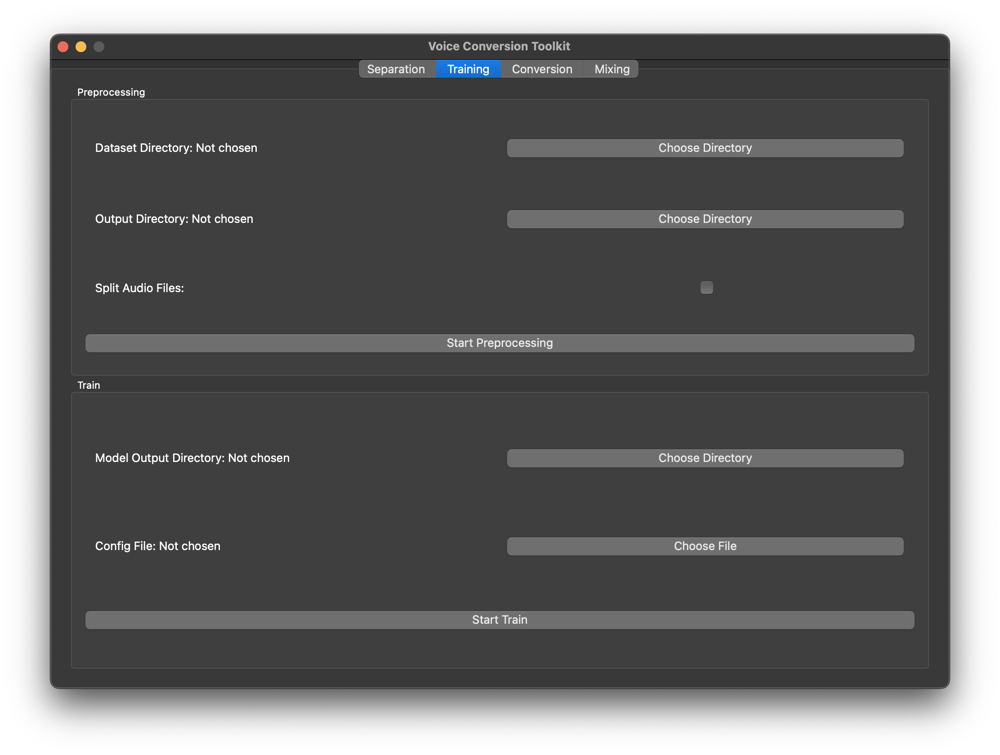
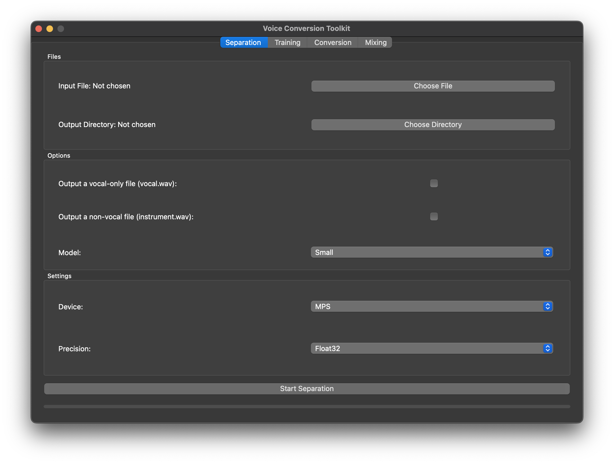
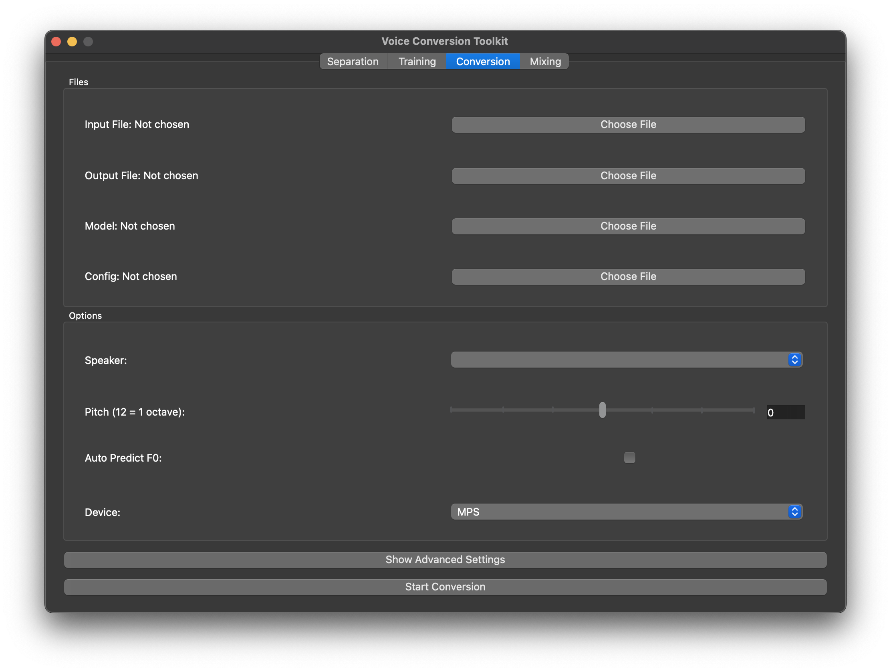
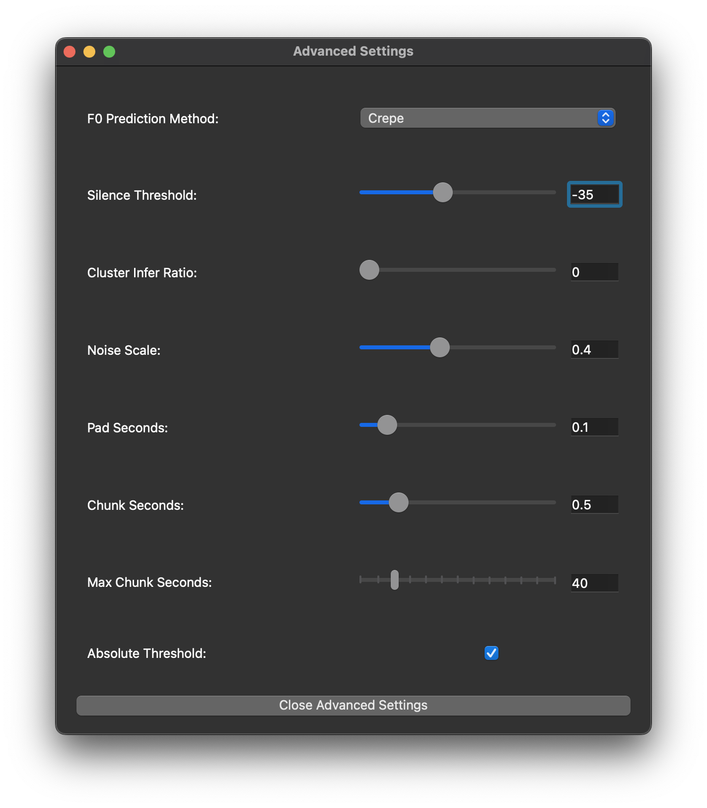
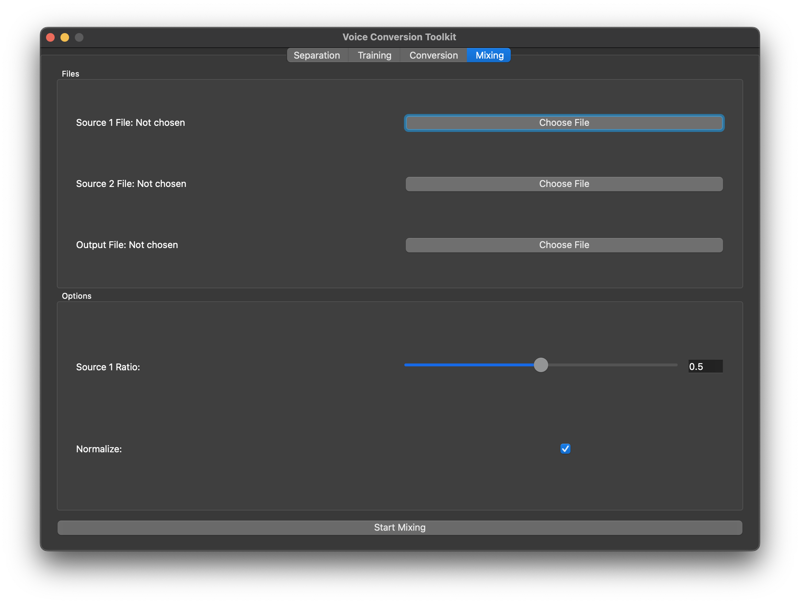

Usage
Starting the Application
Please install the package first before using it. For installation instructions, see here.
To start the application, run the following command in the terminal:
Windows:
svct.exe
macOS/Linux:
svct
A loading screen will appear, and the application will start after a few seconds. The screen is different depending on the operating system. In this documentation, the macOS version is used. Though the appearance is different, the functionality is the same on all platforms.

Vocal Separation Tab

Files
In this tab, you can separate the vocals from the fully mixed track. The input file and the output directory has to be specified. The output directory is where the separated vocals will be saved.
Options
At least one outputting file has to be selected before starting the separation. Model of different size can be selected, the larger the model, the better the separation quality. However, the larger model will take more time to process.
Device and Precision
The device can be selected to be either CPU or GPU. If the device is set to GPU, the model will be loaded to the GPU and the separation will be done on the GPU. It is generally faster to use the GPU, so it is recommended to use the GPU if available. As for macOS, Metal (MPS) can be selected as the device for faster processing.
For both Metal (MPS) on macOS and NVIDIA GPU that is pre-Ampere architecture, the BFloat16 option is not supported. The BFloat16 option is only available for NVIDIA GPU with Ampere architecture or newer. As an alternative, the Float32 option can be used, though the quality might be slightly worse, or CPU can be used with the same quality, but slower processing.
Start Separation
After selecting the input file, output directory, and the options, click the "Start Separation" button to start the separation process. The progress bar will show the progress of the separation. The time taken for the separation depends on the size of the input file and the selected model.
Note that the application will download the model if it is not found in the cache, so the first time the model is used, it will take longer to start the separation, especially if the model is large.
Training Tab
Preprocessing
Before the training, the dataset has to be preprocessed. The dataset should be in the format of a directory containing the audio files. The dataset directory has to be specified, and the output directory for the preprocessed dataset has to be specified as well.
If the audio files are very long, the audio files can be split into smaller segments by checking the "Split Audio Files" option.
The preprocessing can be started by clicking the "Start Preprocessing" button. The preprocessing will take some time depending on the size of the dataset. When the preprocessing is running, there will be an animation indicating that the preprocessing is running.
Training
After the dataset is preprocessed, the training can be started. The path to the
folder of the outputting model and the path to the outputting config file has to
be specified. The config file is named config.json, containing the training configuration,
that is generated when the dataset is preprocessed.
The training can be started by clicking the "Start Training" button. The training will take some time depending on the size of the dataset and the selected model. When the training is running, there will be an animation indicating that the training is running.
Conversion Tab

Files
In this tab, you can convert the vocals to a different singer. The input, output,
model, and config file has to be specified. The model file should be started with
the letter G, that is something like G_XXX.pth, where XXX is the number of
epochs.
Options
After selecting the config file, the speaker dropdown will be populated with the speakers in the config file. The pitch of the converted vocal can be adjusted by using the pitch slider. If the converted vocal is a speaking voice, the "Auto Predict F0" option can be checked to automatically predict the pitch of the speaking voice.
Advanced Settings

The advanced settings can be used to adjust the conversion settings. Do note that the advanced settings are for advanced users, and the default settings should work for most cases.
Start Conversion
The conversion can be started by clicking the "Start Conversion" button. Similar to the training, an animation will be shown when the conversion is running. The time taken for the conversion depends on the size of the input file.
Mixing Tab

Files
In this tab, you can mix the converted vocal with the instrumental. The source 1 file, source 2 file, and the output file paths have to be specified. Do note that this tab can also be used to mix any two audio files, as long as the audio files have the exact same sample rate, number of channels, and length.
Options
The volume ratio of source 1 can be adjusted by using the slider. The volume ratio is between 0 and 1. Since when mixing two audio files, the volume might be too loud, the normalization option is checked by default to normalize the volume of the mixed audio.
Vocal Separation Model Training and Evaluation
Important: This section is for advanced users who want to train the vocal separation model from scratch. The training and evaluation is done in the terminal. The interface is command-line based only, though a GUI version might be added in the future.
Note that installing the package from source is recommended for these features, as it is easier to locate the manifest and model files. For installation instructions, see here.
The current models are trained using MUSDB18-HQ and MoisesDB datasets, with a total of around 18 hours of training data. The resulting models are able to separate the vocals from the fully mixed track, but if you have a larger dataset, you can train the model and evaluate the model using the provided scripts. You are strongly encouraged to upload the trained model to Hugging Face for others to use, if possible.
Preprocessing
Important: Note that this feature is available only when installing the package from source. Please see Development for more information.
This entry point is used to generate the csv files from the downloaded MUDB18-HQ and MoisesDB datasets. If you are using your own dataset, you should generate the csv files in the format specified in the next section.
To preprocess the dataset, run the following command:
Windows:
vs-preprocess.exe
macOS/Linux:
vs-preprocess
The help message is as follows:
usage: vs-preprocess [-h] [-o CSV_OUTPUT_DIR] [-v VAL_SIZE] [-s STEM] -m MUSDB_DIR [-M MOISESDB_DIR] -w MOISESDB_WAV_DIR
Preprocess the dataset(s).
options:
-h, --help show this help message and exit
-o CSV_OUTPUT_DIR, --csv_output_dir CSV_OUTPUT_DIR
CSV Output directory (default: ./input_csv)
-v VAL_SIZE, --val_size VAL_SIZE
Validation size (default: 0.2)
-s STEM, --stem STEM Stem to preprocess (default: vocals)
-m MUSDB_DIR, --musdb_dir MUSDB_DIR
Path to the MUSDB18 directory (required)
-M MOISESDB_DIR, --moisesdb_dir MOISESDB_DIR
Path to the MoisesDB directory (optional)
-w MOISESDB_WAV_DIR, --moisesdb_wav_dir MOISESDB_WAV_DIR
Path to the MoisesDB wav directory (required)
The MUSDB_DIR is the path to the MUSDB18-HQ dataset, which should contain the
train and test directories. The MOISESDB_DIR is the path to the MoisesDB
dataset, which should contain the moisesd_v0.1 directory. It has to be specified
if the mixed stem audio files are not yet generated. The MOISESDB_WAV_DIR is the
path to the MoisesDB wav directory, which is the output directory of the MoisesDB
mixed stem audio files, and the input directory of the MoisesDB CSV files.
The MOISESDB_DIR has to be specified for the first time the MoisesDB dataset is
used to generate the mixed stem audio files in a similar format to the MUSDB18-HQ
dataset, and can be omitted for subsequent runs.
Training
This entry point is used to train the vocal separation model. The training is done using PyTorch Lightning, and the model is saved in the output directory specified.
To train the model, run the following command:
Windows:
vs-train.exe
macOS/Linux:
vs-train
The help message is as follows:
usage: vs-train [-h] -t TRAIN_CSV -v VAL_CSV [-e EXPERIMENT] [-m MODEL_LOG_DIR] [-c CONFIG]
Train a separation model.
options:
-h, --help show this help message and exit
-t TRAIN_CSV, --train_csv TRAIN_CSV
Path to the training csv file (required)
-v VAL_CSV, --val_csv VAL_CSV
Path to the validation csv file (required)
-e EXPERIMENT, --experiment EXPERIMENT
Name of the experiment (default: exp)
-m MODEL_LOG_DIR, --model_log_dir MODEL_LOG_DIR
Path to the model log directory (default: ./model_log/)
-c CONFIG, --config CONFIG
Path to the config file (default: ./config.yml)
Note that the experiment name is used to differentiate between different experiments,
and a new directory will be created in the MODEL_LOG_DIR with the experiment name.
The experiment name can also be used to create nested directories, for example,
exp1/config1.
The CSV files should have three columns in total, all of which are strings, they are as follows:
songmixture_pathstem_path
The song column is the name of the song, usually follow the format of artist - title.
The mixture_path column is the path to the mixture audio file, and the stem_path
column is that to the stem audio file. Any CSV file that follows this format can
be used for training, even if it is not generated using the preprocessing script.
The config file is a YAML file containing the training configuration. The format
of the config file should follow that of this example here.
There are a few parameters that are worth noting: resume_path is the path to the
directory of the experiment to resume training from, expand_factor is the factor
to expand the dataset by, which should be around the length of a patch/segment.
deeper is the flag to train the large model.
Some of the parameters in the config file have fixed possible values, they and their possible values are as follows:
precision:bf16orfp32neglect_frequency:nyquistorzerooptimizer:adamoradamw
Evaluation
This entry point is used to evaluate the vocal separation model. The evaluation is done on the files with their paths stored in a CSV file, and the model is loaded from the output directory
To evaluate the model, run the following command:
Windows:
vs-eval.exe
macOS/Linux:
vs-eval
The help message is as follows:
usage: vs-eval [-h] -m MODEL_DIR -t TEST_CSV [-p {bf16,fp32}] [-l | --last | --no-last]
Evaluate a separation model.
options:
-h, --help show this help message and exit
-m MODEL_DIR, --model_dir MODEL_DIR
Path to the model directory (required)
-t TEST_CSV, --test_csv TEST_CSV
Path to the test csv file (required)
-p {bf16,fp32}, --precision {bf16,fp32}
Precision (default: bf16)
-l, --last, --no-last
Use the last model
The format of the CSV file is the same as the training CSV file, please refer to the
training section for more information. The precision can be selected to be either
BFloat 16 (bf16) or Float 32 (32), with BFloat 16 being the default. The last
model can be used by specifying the --last flag, or otherwise, the best model
(i.e. the one with the lowest validation loss) will be used.
Note that the results will be saved in the same directory as the model directory. The results include the SDR, SI-SDR, NSDR, and NSI-SDR scores. The scores of each song will be saved in a CSV file, and the summary of the scores will be saved in another CSV file. A box plot of the scores will also be saved in the same directory.